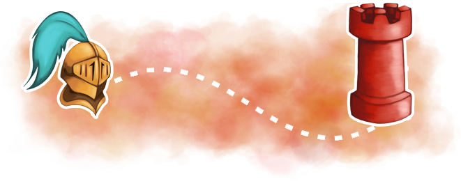

How to Play

Players select a faction to join and are then brought to a map of their area with nearby towers denoted.
Towers can be captured by visiting the location and scanning a QR code.
The more towers that are captured by the player, the more experience they gain towards their level. Bonus experience is gained if multiple people of the same faction collaboratively capture a tower.